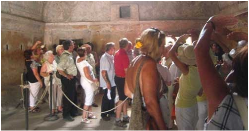
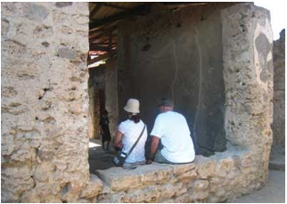
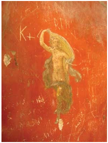
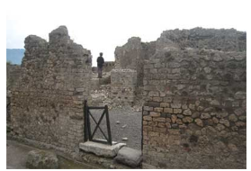
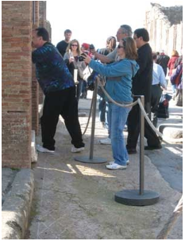

Tourism
From an economic perspective, tourism provides a major export and financial flow into the city of Napals, with over 3.8 million tourists visiting the site each year. This positions Pompeii as both an invaluable economic and historical artifact. As such tourism is circuial to Pompeii, however it is also exacerbating the city’s degradation. Overcrowding and poor communication underpin these problems.
Overcrowding is a significant issue within the site as it causes more rapid degradation in high traffic areas, whilst limiting tourists ability to engage with the site. Tour groups and information often point tourists to ‘must see sites’ or to set predetermined locations. This creates highly trafficked areas within the site, as the daily influx of tourists travelling the same bath inadvertently leads to degreation.
Example of overcrowding within the city.
Overcrowding could be limited/mitigated if tour groups were forced to take different routes, or more plausibly if the site opened new buildings. Opening new buildings or adding buildings to a set rotation would allow tourists to enjoy a unique experience, whilst also lessening the degregating impact of high traffic on the sites. If sites were added to a rotation it would allow for conservation to take place on one building for example when a similar one is currently in the building pool, this means that conservation efforts in one site would not significantly impact on a tourists experience as alternatives would be available. Communication would also effectively mitigate overcrowding as Alia Wallace states that ‘whether a house is open or closed on any given day can vary’, by communicating availability of sites, it would prevent excessive traffic surrounding these regions as tourists may struggle to understand why a building is closed, then stagnate in the area.
Tourist behaviour can have a more substantial negative impact on the site. Due to the ‘open air’ nature of sites within Pompeii and lack of surveillance, tourists are able to directly interact with the sites, further contributing to its degreation. While this level of interaction creates a unique and engaging experience, a lack of knowledge on acceptable behaviours creates the potential for areas of the site to be damaged.
Example of bad behaviour.
As shown in the example, tourists are resting on a building within the site. If tourists were both informed on the negative impacts of this, seating was provided or the site was more closely servaded this behaviour could be reduced.
Pictured is an example of modern graffiti on a fresco, while it can be assumed that tourists understand that this behaviour is wrong, to mitigate or eliminate it greater measures on site surveillance must be imposed or tourists must be educated on the sites historical value (so they gain a respect for the site).
Degradation also occurs in areas closed off to visitors. This can be impart due to insufficient communication, such as broken barriers or a disregard for barriers completely. The image below provides an example of an unclear barrier, as the barrier is broken it may not appear to tourists that an area is closed off.
However shown in this example is a blatant disregard for a barrier put in place to protect the site. The barrier is clear and restrictive, however it fails to impede the tourists movement. To prevent this strong enforcement of rules are required in conjunction with surveillance of tourists.
The Great Pompeii Project is a critical conservation project protecting at risk areas of the city. The project focuses on stabilizing of structures, restoring frescos (which can become faded after years of exposure) and installing a new drainage system to divert water from the site. The project has also installed surveillance cameras throughout the city, keeping watch of the millions of tourists that visit each year (3.9mil as of 2017). So far the project has been a success, allowing more than 130 000 square feet of Pompeii to be restored and reopened. The project has also contributed to new discoveries, such as, a horse still wearing its bronze platte saddle, a treasure trove of amlets, a fresco of Narcissus and charcoal grafiti.
Hourse discovered pictured bellow